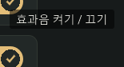
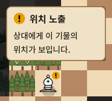

일반 UI의 툴팁은 기존 방식으로 복원했습니다. 인게임의 양피지 카드·글꼴·상태 배지·커서 간격은 유지합니다.
| 범위 | 현재 적용 |
|---|---|
| 플레이 홈, 메뉴, 기물 설명, 피드백, 설정, 계정·순위 화면의 기존 도움말 | 기본 툴팁 |
| 대국의 행동·배치·기보·상태 안내, 대국 화면 내부 팝업 | 설명 카드 유지 |
| 대국에서 연 설정·기물 설명 등 별도 화면 | 기본 툴팁 |


Godot 실제 실행 검사: 범위 분리 33개 + 보드 상태 카드 24개, 총 57개 통과. 웹·실제 모바일 실행은 이번 검증에 포함하지 않았습니다.
검증 기록 · 변경 내역